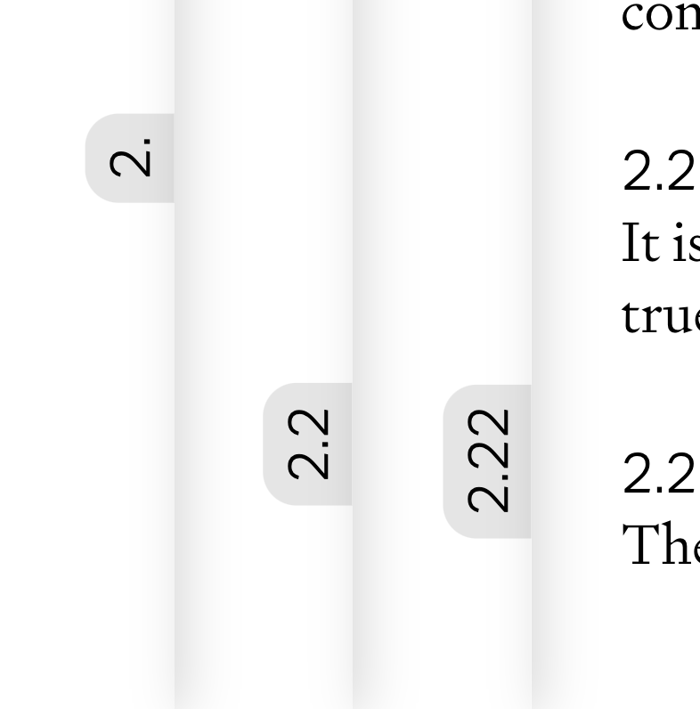
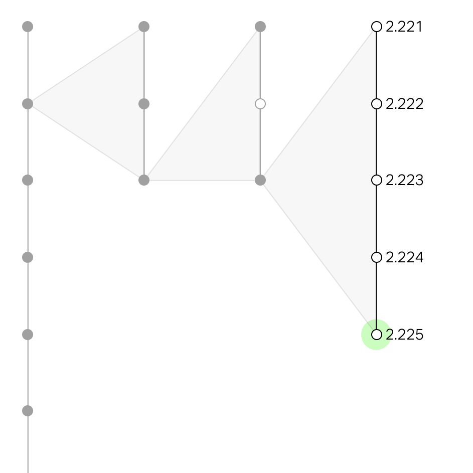
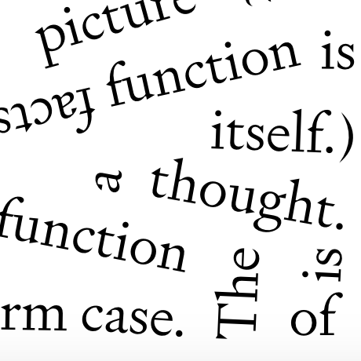

Tractatus Logico-Philosophicus
Iterations
Thread

Tabs
Dendrogram
Nonsense
About
Ludwig Wittgenstein’s Tractatus Logico-Philosophicus is a landmark philosophical text composed of propositions in a tree structure (e.g. 2, 2.1, 2.1.1, etc). This website explores different methods of reading and visualizing the Tractatus’ hierarchy, with more or less practical utility. I am not the first to have this idea; you can find a collection of predecessors to my project here. Also, we’re now on FontsInUse!
Publishing information
This project can be viewed in either the Pears/McGuinness English translation or the original German. It uses a JSON version of the text scraped by Pierre Bellon from Kevin C. Klement’s page and adjusted/cleaned by me. The Tractatus is in the public domain.
Colophon
Body text is set in Signifier by Kris Sowersby; Numbering and logic statements are set in Aktiv Grotesk by Dalton Maag; Header is set in Panama by Roman Gornitsky.
Development
This project wouldn't have been possible without the following libraries/plugins: D3.js, Scrollama, Matter.js, matter-dom-plugin, and matter-collision-events
You can browse the GitHub repo for this project here, and if you notice any discrepancies with the text please feel free to submit an issue.
| de